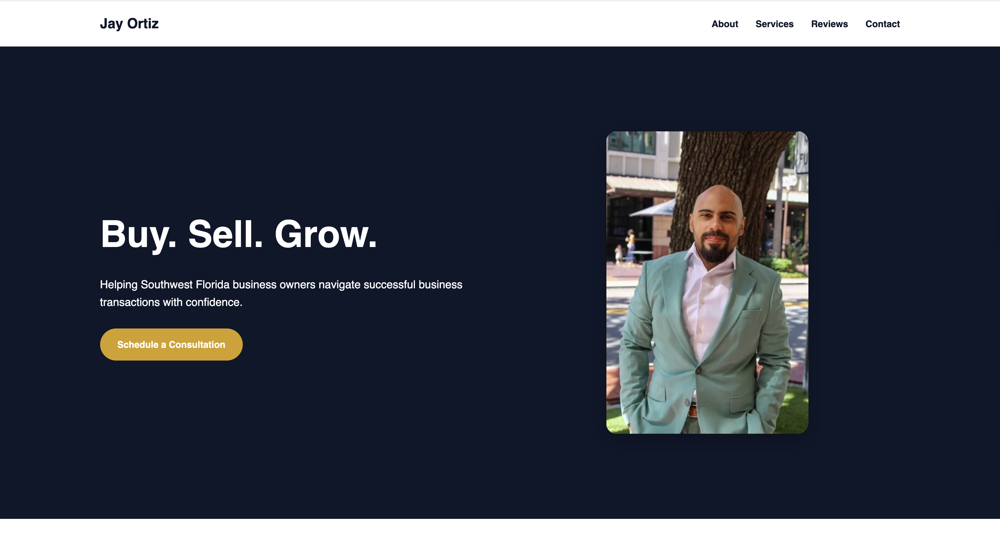
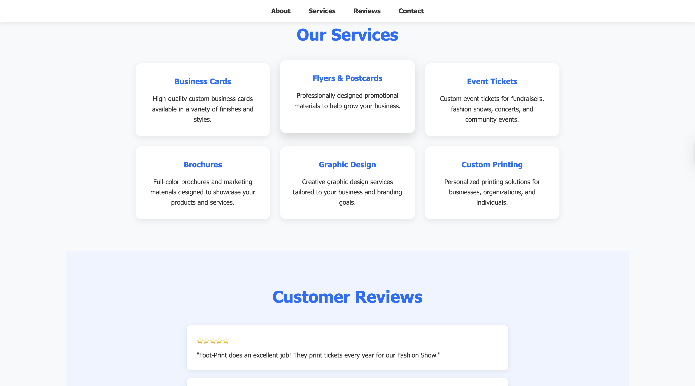
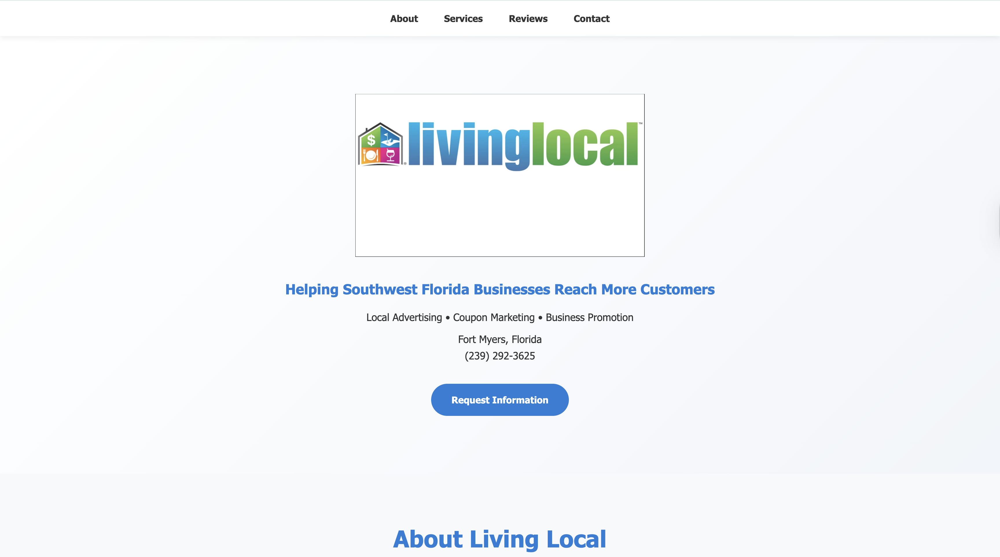

Custom websites built for businesses that want to establish credibility, attract customers, and stand out online.
Live Websites
Mobile Friendly
Response Time
Built From Scratch
Hi, I'm Sawyer LaMarch, a freelance web designer and developer based in Fort Myers, Florida.
I build modern, responsive websites for local businesses looking to strengthen their online presence and attract more customers.
Every website I create is designed with performance, usability, and professionalism in mind.
Modern custom website designs built specifically for your business.
Websites optimized for desktop, tablet, and mobile devices.
Domain setup, GitHub Pages deployment, and publishing support.
Ongoing updates, improvements, and website support.

Professional website for a Southwest Florida business broker featuring services, testimonials, and consultation requests.
Visit Site
Business printing website showcasing products, services, customer reviews, and contact information.
Visit Site
Marketing-focused website highlighting promotional services and customer engagement.
Visit SiteLooking for a professional website for your business? Let's talk.